Generative AI 101
Intelligent Agents — Module 2
A.Y. 2026/2027
Giovanni Ciatto
Compiled on: 2026-10-08 — printable version
GenAI: Generative Artificial Intelligence
AI algorithms capable of automatically generating content, e.g.:
- text
- images
- audio and/or video
- [source] code
- …
GenAI through Foundation Models (FM)
- Large neural networks that learn to process, “understand”, and produce [not necessarily] structured and unstructured data
- trained on large amounts of data, and with large computational resources, to do a bit of everything
- with the idea that they can later be specialized for specific tasks
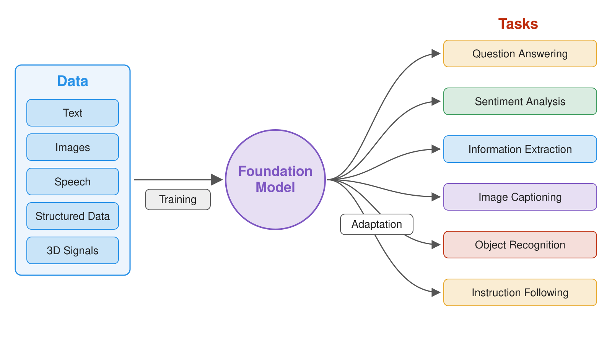
Terminology: Foundation Models vs. Large Language Models
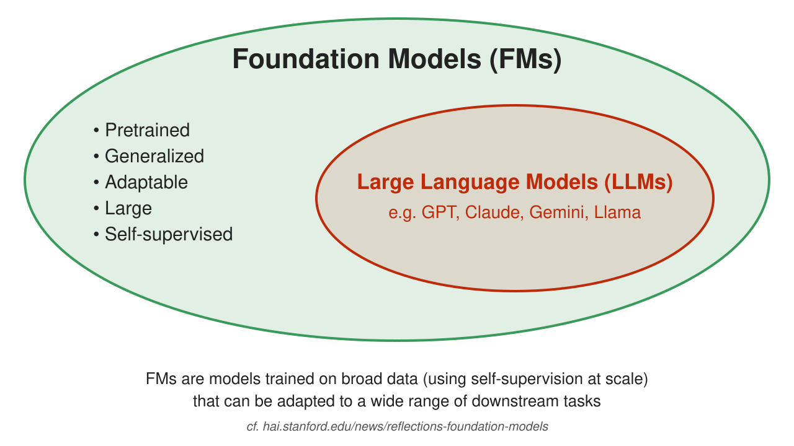
Basic Operation of LLMs
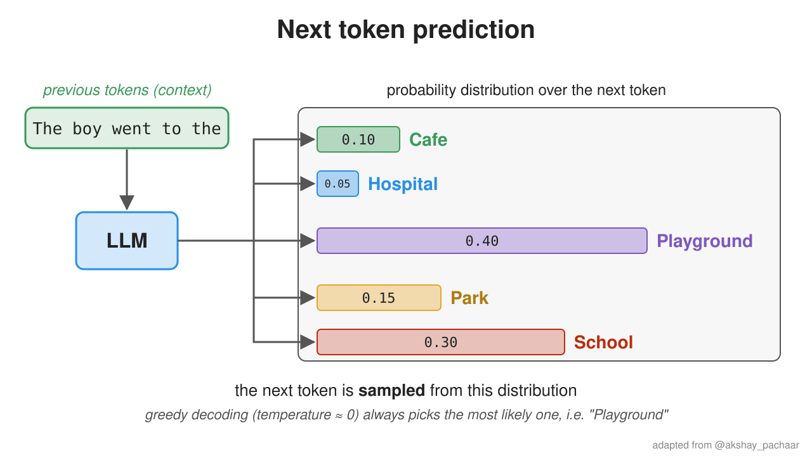
- LLMs have learned to predict the next word (actually, token) in a text given the previous context
- similar to the predictive keyboard on mobile phones, but much more complex and powerful
- the next token is sampled from the predicted distribution: the temperature parameter controls how random the choice is
- In other words, LLMs have learned how to use natural language
- Foundation models can combine input/output text with other modalities (e.g. images, audio, video)
- e.g. accepting text + image as input, and producing text + image as output, or any combination of these modalities
- This makes them very good at dealing with unstructured data, either in input or output
About Tokens
- LLMs do not process characters nor words, but tokens: chunks of text, as defined by the model’s tokenizer
- you may think that token $\approx$ word, but this actually depends on the specific tokenization algorithm
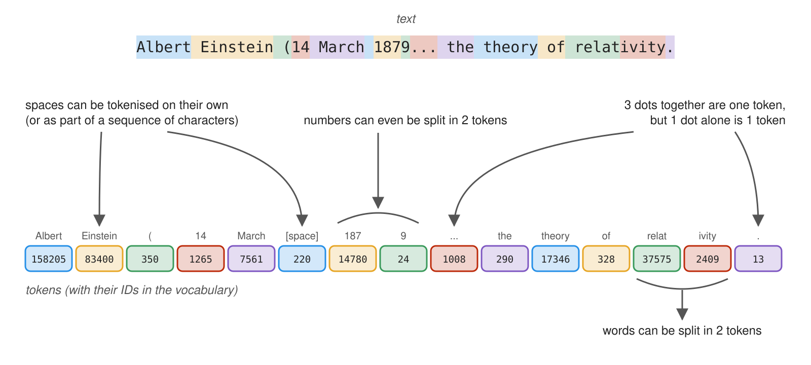
- Tokens are the unit of measure for LLMs:
- the context window is the maximum number of tokens a model can process in a single request (cf. context management)
- the cost of using LLMs as services is commonly per token (cf. Open Router)
Language and Reasoning
-
Natural language helps people communicate
-
It can be used to express complex or abstract concepts
-
It can be used to reason about problems and solutions
- however it admits imprecisions, due to ambiguity, variable interpretations, subjectivity, etc.
Natural language allows LLMs to use intuition in reasoning, like humans do
(thus making mistakes like humans do)
-
$\implies$ LLMs can be very confident in themselves, while saying incorrect, imprecise, or made-up things
- a.k.a. hallucinations
-
better would be to combine LLMs with symbolic AI tools, to get the best of both worlds
Analogy with Dual-System theory
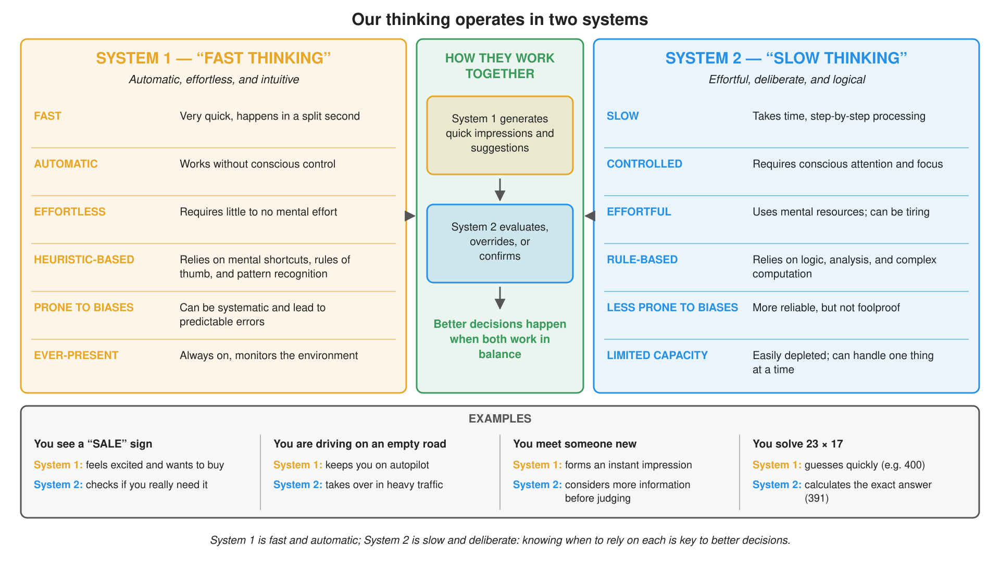
(cf. Thinking, Fast and Slow)
GenAI with an as-a-Service consumption model
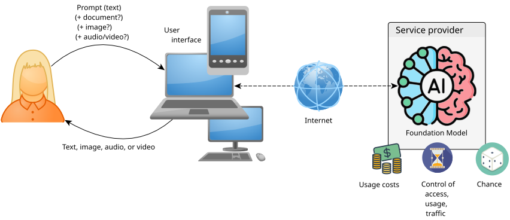
GenAI with an as-a-Service consumption model
-
Cost models:
- subscription-based: you pay a fixed monthly/annual fee to access the service
- it often still includes usage limits
- usage-based: you pay in proportion to the actual use of the service
- subscription-based: you pay a fixed monthly/annual fee to access the service
-
Consumption is measured based on the computational effort required to serve the request:
- processed tokens (for text)
- number of requests (often also subject to rate limits, e.g. max requests per minute or day)
- size of the processed data (for images, audio, video)
- complexity of the specific model used to serve the request
-
Generation should be considered a stochastic process by construction
- The quality of the service is subject to randomness and fluctuations due to:
- service load
- model choice, and its related updates
- service limits possibly reached in the current time window
- chance
GenAI learning cycle
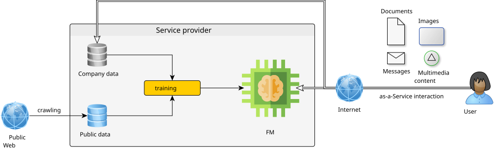
GenAI learning cycle — Consequences (pt. 1)
-
Sampling bias: GenAI knows only what it has been trained on + the pious hope that it learns to generalize
-
Learning uses data taken from the Web + possible provider-owned company data
- there is documented use of previous users’ interactions as feedback for subsequent training
- Niche information may not be learned correctly (or at all)
- It is essential to avoid sharing sensitive, confidential, or copyrighted information
GenAI learning cycle — Consequences (pt. 2)
-
Learning cycles are extremely expensive in terms of money and computational resources…
-
… performed periodically (weeks? months?) to improve the quality of the service
- the as-a-Service consumption model gives the user transparent access to the updated service
- Recent information may not have been learned yet
- There is a risk of receiving outdated or incomplete answers from GenAI
- GenAI gives the impression of learning during the conversation, but its weights are only updated offline
- within a conversation, it just re-reads the whole history at each turn (cf. stateless APIs)
- “memory” features of chat apps store notes about the user, and put them back into the context of later conversations
Some technological solutions let you choose (pt. 1)
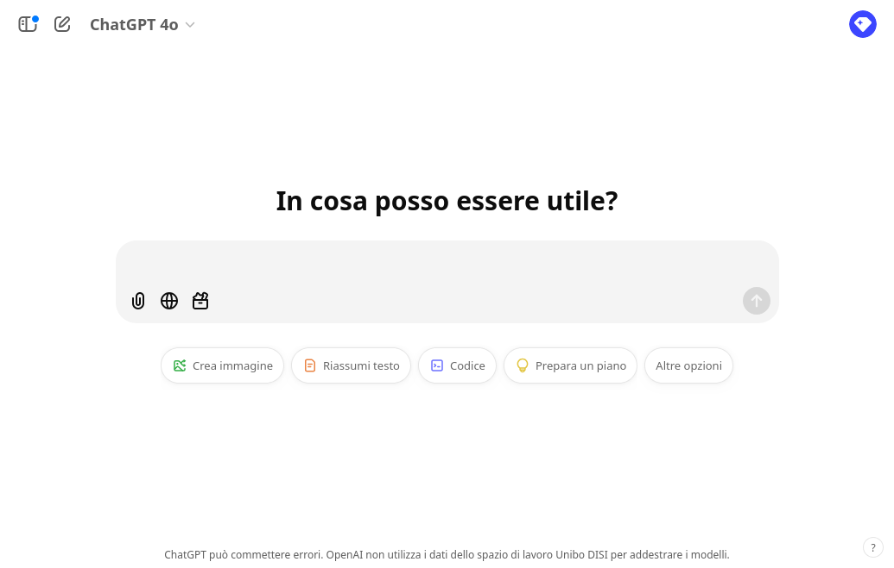
Some technological solutions let you choose (pt. 2)
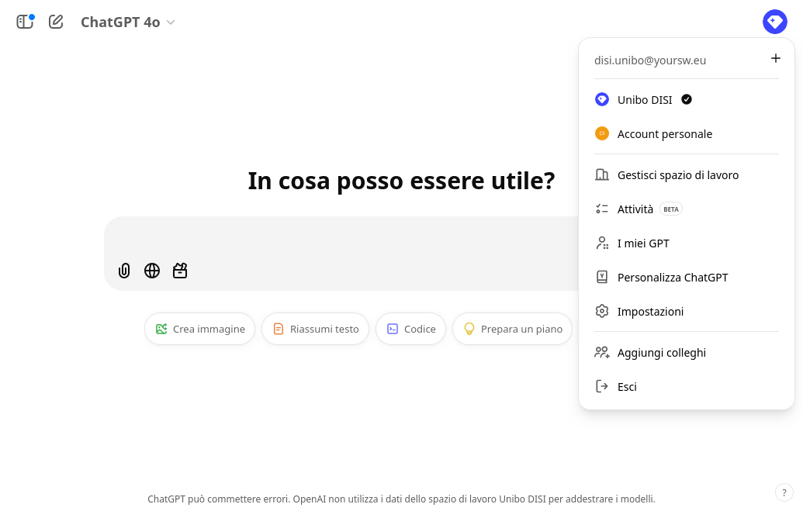
Some technological solutions let you choose (pt. 3)
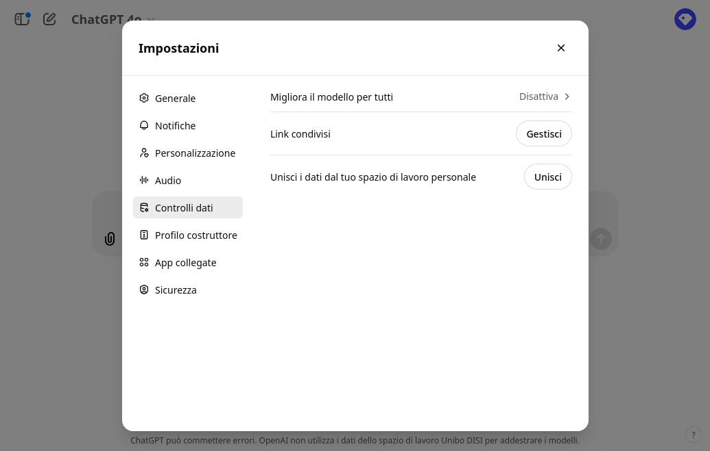
Some technological solutions let you choose (pt. 4)
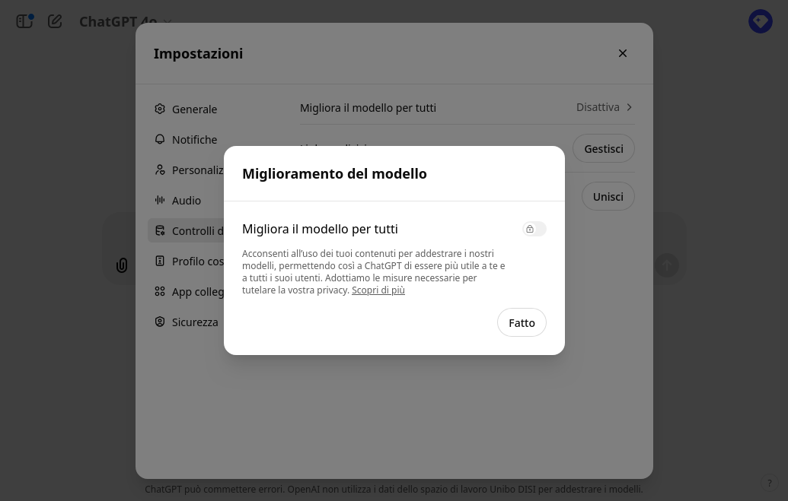
Main technological solutions
Categorized by type of interface
- Conversational: e.g. ChatGPT, Claude, Scite
- Auto-completion: e.g. GitHub Copilot
- Programmatic: e.g. OpenAI Platform, Hugging Face
- In-App: e.g. Microsoft 365 Copilot
- Audio/video editing: e.g. Suno, Runway
- Inspection of generated material: e.g. GPTZero, ZeroGPT
- unreliable: OpenAI itself withdrew its AI-text classifier, due to its low accuracy
- Agentic: e.g. Claude Code, Codex, OpenClaw
Non-exhaustive list!
Conversational interface
- Textual interaction that mimics a (chat) exchange
- the user asks, the AI responds reactively
- The interface allows entering a prompt
- optionally including attachments (e.g. images, documents)
- Responses are contextual
- i.e., the conversation history affects future responses
- The response contains text (often formatted)
- optionally: images, URLs, code
Sometimes…
- … before responding, the AI performs a Web search
- important for obtaining up-to-date results
Auto-completion interface
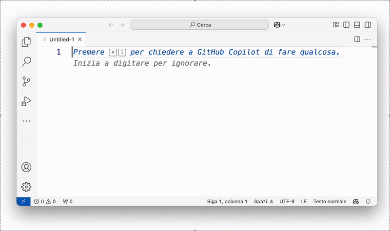
- The AI suggests a completion for the entered text
- e.g., code, text, URLs
- The user accepts (even partially) or ignores the suggestion
- Used especially for programming code
Attention…
- … subscription pricing model (see here)
- … potential leaks of sensitive information
- … non-negligible lock-in risk
Programmatic interface
from openai import OpenAI
client = OpenAI() # reads the API key from the OPENAI_API_KEY env variable
stream = client.chat.completions.create(
model="gpt-5-mini",
messages=[
dict(role="user", content="European countries, one by line")
],
stream=True, # receive the response token by token
)
for chunk in stream:
print(chunk.choices[0].delta.content or "", end="")
Output (excerpt, may vary):
Albania
Andorra
Austria
Belarus
Belgium
...
-
Programming language interacting with AI
- e.g., Python, JavaScript
-
The interaction remains of the request-response type
- the program sends a request, the AI responds
Enables
-
Parametric prompts, responses processed automatically
- e.g.
list of LOCALITIES in AREA, one by line- where
LOCALITIES$\in$ {cities,regions,states} - and
AREA$\in$ {Europe,Asia,Africa,America,Oceania} - results sorted alphabetically
- where
- e.g.
-
Writing software that uses AI as a service
- useful in both industry and research
Attention…
- … usage-based pricing model (see here)
- proportional to the number of processed tokens
- prices vary by model
In-app interface
-
GenAI integrated into desktop or web applications
- e.g., Microsoft Office (Word, Excel, Outlook)
-
support for an internal conversational interface
- a conversation that is intrinsically contextualized
-
AI automates complex operations (within the app)
- e.g., draft writing
- e.g., generation of formulas, charts
Attention…
- … subscription pricing model (see here)
- … potential leaks of sensitive information
- … non-negligible lock-in risk
Interface for editing audio/video content (e.g. music)
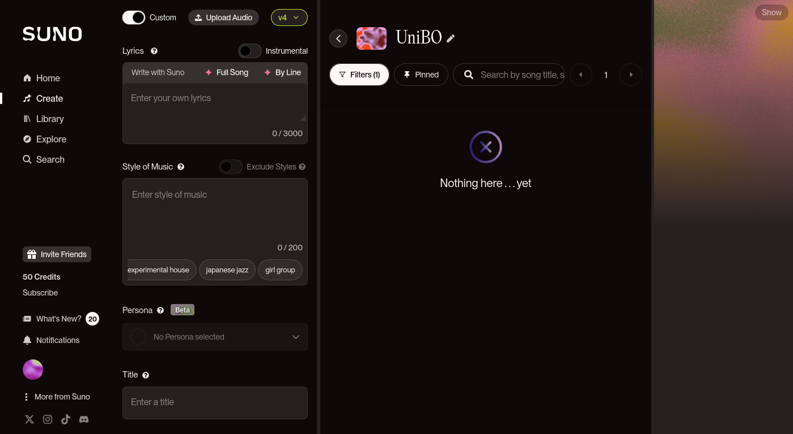
-
One-shot interaction to generate content
- input: textual description of the content
- output: content
-
The interface then allows
- playback of the content
- editing of the content
- e.g., cutting parts, changing key
Example
Agentic interface
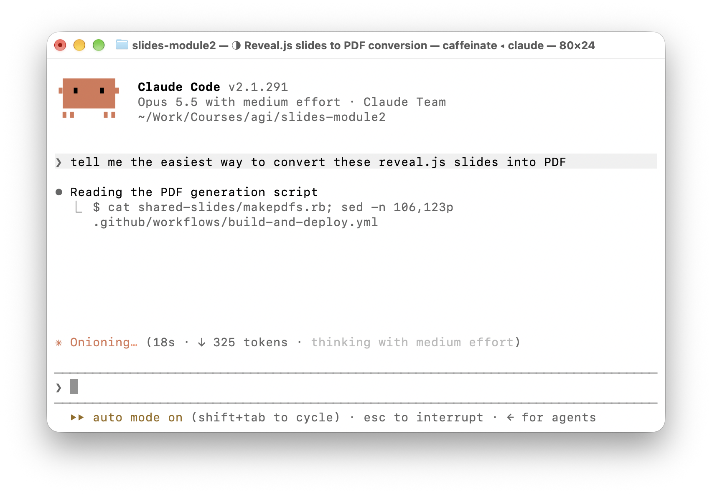
- The user assigns a goal (a task), not just a question
- The AI works in a loop: plan → act → observe → repeat
- reads files, runs commands, edits code, searches the Web
- It operates within a workspace
- e.g. a repository, the file system, a shell (locally or in a cloud sandbox)
- The user supervises
- approves actions, interrupts, reviews the changes
- Many front-ends: CLI, IDE, desktop, web, even messaging apps
Attention…
- … side effects: it acts on your machine (e.g. deleted files, leaked secrets)
- … prompt injection via the files and Web pages it reads
- … heavy token consumption (subscription or usage-based pricing)
- … review burden and risk of over-reliance
- … non-negligible lock-in risk
Agentic interfaces: the landscape
| Vendor | Front-ends | Models | License | |
|---|---|---|---|---|
| Claude Code | Anthropic | CLI, IDE, desktop, web | Claude | proprietary |
| Codex | OpenAI | CLI, IDE, desktop, web | GPT | Apache-2.0 (CLI) |
| OpenClaw | OpenClaw Foundation | self-hosted, messaging apps (WhatsApp, Telegram, Slack, …) | any (hosted or local) | MIT |
| Cursor, Copilot (agent mode) | Anysphere, GitHub | IDE | various | proprietary |
Common anatomy
These are themselves LLM-based agentic software: the kind of system this module teaches you to build
Customers buy automation, not agents
Why do people care about software in the first place? (cf. Introduction to Software Engineering)
-
Most people do not care about algorithms, software, or agents per se…
-
… they care about automating the solutions to their problems
- algorithms, software, and now agents are just means to that end
-
Classic software automates problems which are repetitive and structured enough to be coded
-
GenAI widens the set of automatable problems
- to problems which are linguistic, ill-defined, or about unstructured data
- i.e. problems which are hard to code explicitly
Corollary
- Autonomy is a cost (risks, testing, governance), not a goal
- Aim for the least autonomy that gets the job done (cf. Building effective agents)
Three ways engineers exploit GenAI
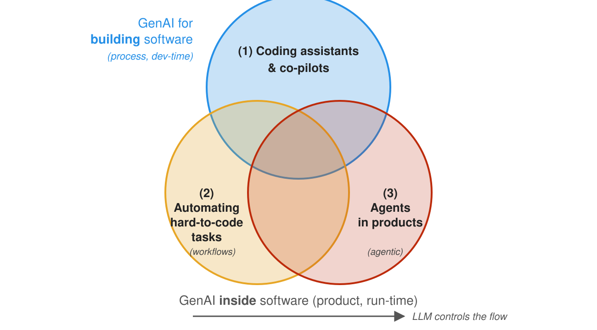
- As coding assistants and co-pilots
- GenAI helps engineers build the software
- To automate activities which would otherwise be hard to code
- GenAI is a step in a flow decided by the developers
- To create agents for software products
- GenAI decides (part of) the flow, increasing the product’s autonomy
- (1) is about the process (dev-time): the product may contain no AI at all
- (2) and (3) are about the product (run-time)
- they are ends of a spectrum: who controls the flow?
- the developer’s code (workflow) vs. the LLM (agent)
Not mutually exclusive!
Each dimension on its own
-
(1) only: coding an ordinary Web application (no AI inside) with the help of Claude Code
- cf. agentic interfaces
- GenAI speeds up development, yet the final product is classic software
-
(2) only: a script which extracts structured data from recommendation letters
- the steps are fixed in code (read letter $\rightarrow$ prompt LLM $\rightarrow$ validate output $\rightarrow$ store)
- the LLM is one step among many: it does not decide what to do next
-
(3) only: a customer-support chatbot which decides which tools to call (e.g. look up orders, open tickets)
- the LLM chooses the next action, based on the conversation
- the product gains autonomy, and so does its risk profile
How the dimensions combine
| Combination | Example |
|---|---|
| (1) + (2) | the letter-extraction script, written with a coding assistant |
| (2) + (3) | an agent whose tools are themselves LLM-based workflows (e.g. the tender example) |
| (1) + (3) | an agentic product built with a coding agent |
| (1) + (2) + (3) | an assistant for a PhD admission committee: workflows to extract data from candidates’ documents, an agent to answer the committee’s questions, all coded with a coding agent |
Twist
- One team’s (1) is another team’s (3)
- Claude Code is a tool for its users (1)…
- … and an agentic product for Anthropic (3)
From language to action
-
An LLM produces text, not action
- action requires software which maps text onto operations
- e.g.
Book the train to Lisbonis just text… - … until software maps it onto search, booking, payment, and confirmation steps
-
Are LLMs agents? Not really, not fully, not by themselves
- they do not perceive nor act on environments directly
- they do not persistently manage goals and state
-
In both (2) and (3), the “agent” is mostly the surrounding software
- agent $\approx$ controller + LLM + tools + memory + policies
Intelligence vs. autonomy vs. agency are separable dimensions (cf. Floridi, 2025)
- What can the system do? (agency)
- Who controls when and why it does it? (autonomy)
- What state does it actually change?
Language is a weak substrate for agency
- Natural language is expressive and flexible…
- useful for vague goals, exceptions, preferences, and explanations
- … but also ambiguous and underspecified
- fluent text may be plausible but false
- confident text may be non-executable
- e.g.
get approval, then submithides who approves, how approval is checked, and what submission changes
Hence: LLMs propose, software verifies
- Treat LLM outputs as candidate artefacts (plans, classifications, explanations)…
- … to be checked by external components: validators, tests, policy checkers, humans
- cf. the LLM-Modulo framework (Kambhampati et al., 2024)
- recall the dual-system analogy: fast intuition + slow checking
What can GenAI do inside software? (dimensions 2–3)
Combine prompts, tools, vector stores, and agents to constrain and govern the behavior of pre-trained (foundation) models, in order to:
- generate contents (text, images, code, etc.) for a specific purpose
- e.g. bring unstructured data into a particular format
- e.g. produce summaries, reports, highlights
- interpret unstructured data and grasp information from it
- e.g. extract entities, relations, sentiments
- e.g. answer questions about a document
- automate data-processing tasks which are hard to code explicitly
- e.g. the task is ill-defined (
write an evaluation paragraph for each student's work) - e.g. the task requires mining information from unstructured data (
find the parties involved in this contract) - e.g. the task is complex yet too narrow to allow for general purpose coding (
plan a vacation itinerary based on user preferences)
- e.g. the task is ill-defined (
- interact with users via natural language
- e.g. chatbots, virtual assistants
Let’s explain the nomenclature
-
Pre-trained foundation models (PFM): large neural-networks trained on massive datasets to learn general skills (e.g. ‘understanding’ and generating text, images, code), most commonly accessed as-a-Service via API, as provided by third-party companies
- e.g. GPT (OpenAI), Claude (Anthropic), Gemini (Google), Llama (Meta), Mistral, Qwen (Alibaba), etc.
- some are proprietary (usable only via the provider’s API), others are open-weight (downloadable and runnable locally, cf. on-premise deployment and open models)
-
Prompts: carefully crafted textual inputs that guide some PFM to produce desired outputs
- prompt templates are prompts with named placeholders to be filled with specific data at runtime
- e.g.
Write a summary of the following article: {article_text}
- e.g.
- prompt templates are prompts with named placeholders to be filled with specific data at runtime
-
Tools: external software components (e.g. WebAPIs, databases, search engines) that PFMs can ask to invoke (the invocation is performed by the surrounding software), to perform specific tasks or retrieve information
- e.g. a calculator API, a weather API, a database query interface
-
Vector stores: specialized databases that store and retrieve high-dimensional vectors (embeddings) for the sake of information retrieval via similarity search
- e.g. to support retrieval-augmented generation (RAG)
-
Agents: software systems that orchestrate the interaction between PFMs and tools, enabling dynamic decision-making and task execution based on the context and user input
- e.g. a chatbot that uses a PFM for conversation and invokes a weather API when asked about the weather
- e.g. an assistant that uses a PFM to understand user requests and a database to fetch relevant information
What does an AI-powered application include?
(i.e. a product exploiting GenAI as per dimensions (2) and (3))
-
FM are commonly not produced in-house, but rather accessed via APIs… yet the choice of what model(s) to use is crucial
- must be available, configured, and most commonly imply costs (per call, per token, etc.)
- imply the choice of some client library, and the related programmatic interface
- e.g. OpenAI Python SDK, Hugging Face Transformers, etc.
-
A set of prompt templates (text files, or code snippets) that are known to work well for the tasks at hand
- commonly assessed via semi-automatic evaluations on a validation set of inputs
-
A set of tools that PFMs can ask the application to invoke
- these may be plain functions in the application’s code…
- … or software modules exposing tools via the MCP protocol (MCP servers), somewhat similar to ordinary Web services
-
A set of agents, implementing the logic to orchestrate the interaction between PFMs and tools
- these are software modules, commonly implemented via libraries such as LangChain or LlamaIndex
-
A set of vector stores (if needed), populated with relevant data, and accessible by the agents
- these are software modules, somewhat similar to ordinary DBMS, offering CRUD operations on data chunks indexed by their embeddings
-
LLM-as-a-Judge evaluations to assess the quality of the outputs produced by the system, and to guide the improvement of prompts, tools, and agents
- e.g. by comparing the output to a reference answer, and by assigning a score based on some criterion
Concept: Prompt Templates
| Technique | Prompt template | Description |
|---|---|---|
| Role playing | You are an expert in {field} known for {key adjective}. Help me {task}. |
telling the AI to act as a famous expert or celebrity |
| Style unbundling | Describe the key elements of {expert}'s style/skill in bullet points. Do {task} in the following style: {style}. |
describe what you like about a style, rather than copying it directly |
| Emotion prompting | Help me {task}. Please make sure {attribute}. This task is very important for my career. |
use emotional pressure and persuasion with the AI |
| Few-shot learning | Here are some examples of {task}. Generate a {task} for {new context}. |
add examples of the completed task to the prompt |
| Synthetic bootstrap | Generate ten examples of {examples} for {context}. Here are the inputs: {inputs}. Generate {task} using {examples}. |
use AI to generate good examples of the completed task |
(source: Lenny’s Newsletter)
{placeholders}are filled with actual data at runtime
Concept: Agents Calling External Tools
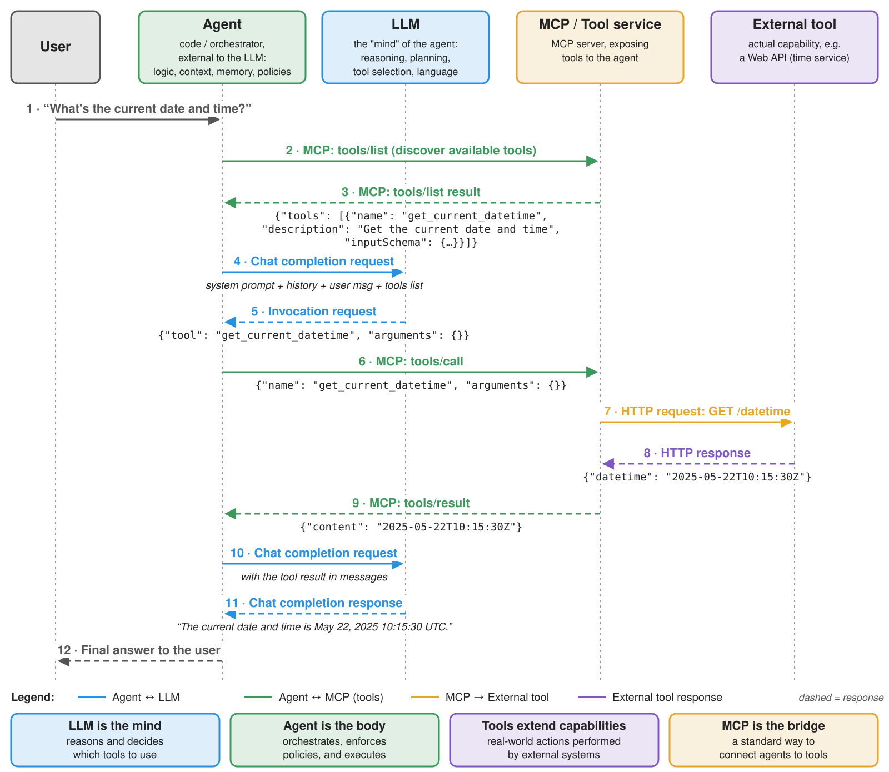
Concept: Model-Context Protocol (MCP)
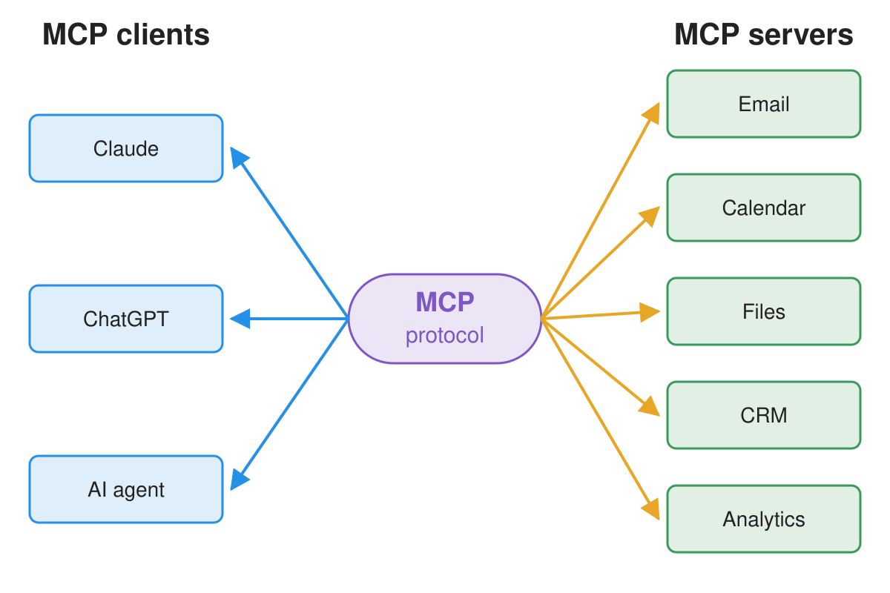
- MCP $\approx$ standard protocol for LLM-based applications to discover and call external tools (cf. specification)
- Allows for decoupling between the agent’s logic and the implementation of the tools, thus enabling modularity and interoperability
- Each MCP server exposes its own tools (names, descriptions, input schemas), plus possibly resources (data) and prompts (templates)
- The host application (e.g. Claude Code, or your agent) runs one MCP client per server it connects to
- optionally, a gateway may aggregate several servers behind a single endpoint
Concept: Retrieval-Augmented Generation (RAG)

Concept: LLM-as-a-Judge
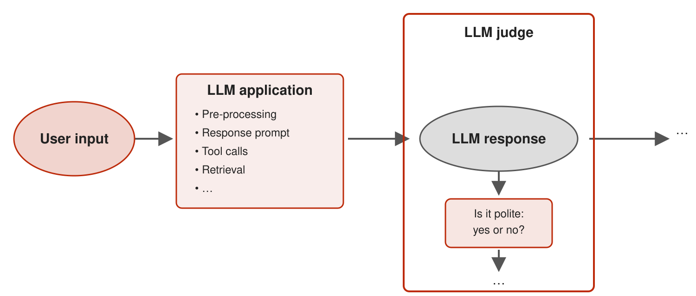
- Exploiting an LLM to evaluate the quality of some other LLM’s output…
- … based on some informal criterion (e.g. relevance, accuracy, completeness, etc.)
- … by comparing the output to some reference (e.g. a human-written checklist)
(more on this in the validating lecture)
The GenAI workflow
(The workflow of engineering products as per dimensions (2) and (3). Similar to the ML workflow in the sense that the goal is to process data, but different in many details: e.g. training is optional, and commonly not performed in-house, as pre-trained models are exploited)
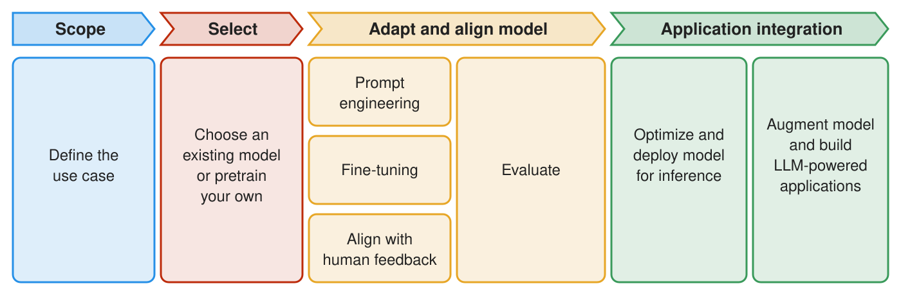
- there could be many iterations (e.g. for PFM selection, and prompt tuning)
- the whole workflow may be re-started upon data changes, or task changes, or new PFM availability
- the interplay between prompts, models, tasks, and data may need to be monitored and adjusted continuously
- the data-flow between components (agents, PFM, tools, vector stores) may need to be tracked for the sake of debugging and monitoring
Peculiar activities in a typical GenAI workflow
-
Foundation model selection: choose the most suitable pre-trained model(s) based on task requirements, performance, cost, data protection, and availability
- implies trying out prompts (even manually) on different models
-
Prompt engineering: design, test, and refine prompt templates to elicit the desired responses
- implies engineering variables, lengths, formats, contents, etc
-
Evaluations: establish assertions and metrics to assess PFM responses to prompts (attained by instantiating templates over actual data)
- somewhat similar to unit tests in ordinary software
- important when automatic, as they allow quick evaluations on prompt/model combinations
-
Tracking the data-flow between components (agents, PFM, tools, vector stores) to monitor costs, latency, and to debug unexpected behaviors
Example of GenAI workflow (pt. 1)
Support public officers in managing tenders through a GenAI assistant that understands and compares procurement decisions transparently.
Scope
-
Problem Framing:
- Content Generation: draft and justify comparisons among suppliers’ offers vs. technical specs
- Interpretation: understand regulatory documents and technical language
- Automation: score offers against check-lists derived from the technical specs
- Interaction: enable officers to query and validate results through natural language
- i.e. a workflow (dimension 2) for scoring, plus an agent (dimension 3) for the officers’ questions
-
Data Collection: past tenders’ technical specifications and acts; regulatory documents; previous evaluations (with the officers’ scores)
-
Data Preparation:
- devise useful data schema & extract relevant data from documents
- anonymize sensitive info (personal data; supplier identities, to reduce bias)
- segment documents and index by topic (law, SLA, price table, etc.)
Select
- Foundation Model Selection: multi-lingual? specialized in legal/technical text? cost constraints? support for tools? where does it run (data protection)?
- try out candidate prompts on candidate models
Example of GenAI workflow (pt. 2)
Adapt and align
-
Vector stores: embeddings for tender documents & specs, legal texts & guidelines, previous evaluations, templates
- choose embedding model and chunking strategy, populate the store, engineer retrieval strategies
-
Prompt Engineering: templates for check-list extraction, justification, and Q&A
- role-based system prompts (
You are a procurement evaluator…), placeholders for retrieved chunks, iterate on manual tests
- role-based system prompts (
-
Evaluations: past tenders (with the officers’ scores) as validation set
- exact checks on extracted check-lists and scores; LLM-as-a-judge on justifications (e.g. is every claim backed by a cited document?)
- re-run at every change of prompts or models
Application integration
-
Tools: regulation lookup API, tender database query API, report generation out of document templates
- scores are computed by deterministic code out of the (validated) check-lists: the LLM proposes, software verifies
-
Workflow + Agent:
- workflow: extract check-lists $\rightarrow$ validate $\rightarrow$ score $\rightarrow$ generate comparison report
- agent: answers officers’ questions, orchestrating RAG and tool invocations
-
Tracking & Oversight:
- log prompts, retrieved chunks, tool calls, and scores, for traceability and auditing
- the system proposes, the officer decides (and signs off); comply with GDPR and the AI Act (cf. governance)
Lecture is Over
Compiled on: 2026-10-08 — printable version